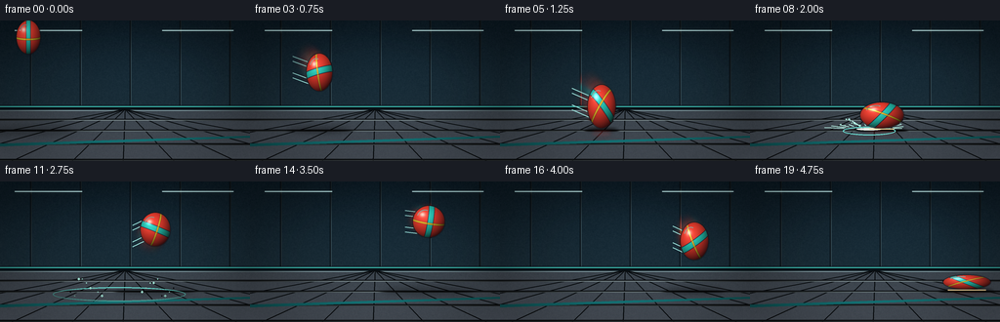
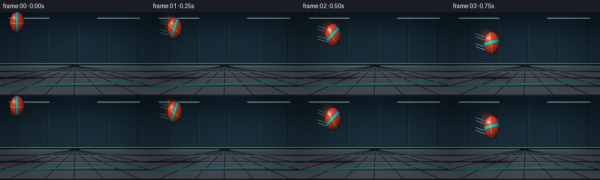
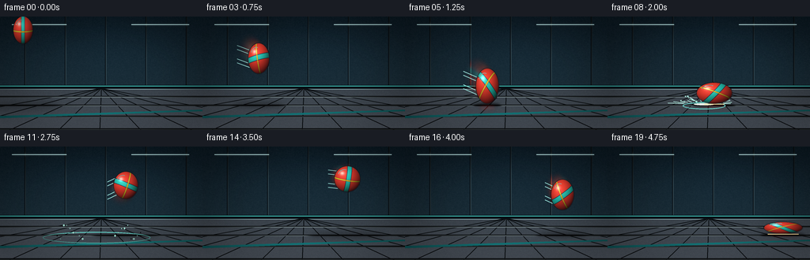
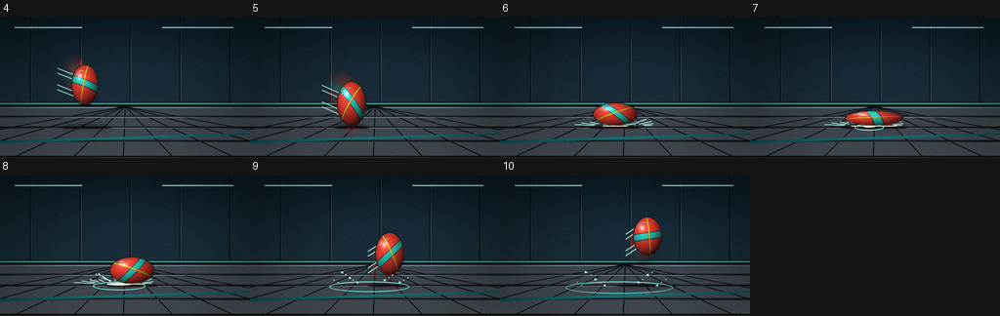

CODING AGENTS AS PIXEL WORLD MODELS
traex/GPT-5.6-Sol · phygen_026
点击播放 · 原生 RGB 像素
逐轮保存的候选
回放视频、检查图与代码变化。
每份候选均可单独播放。实际图片检查记录在下方工具轨迹中。
候选 01播放与检查图
点击播放 · 原生 RGB 像素


展开代码变化
--- 上一保存版本
+++ 本次保存版本
@@ -0,0 +1,220 @@
+from pathlib import Path
+import json, math
+import numpy as np
+from PIL import Image, ImageDraw, ImageFilter
+import artifact_io
+
+# Procedural cinematic animation of an elastic rubber ball striking a hard gym floor.
+CASE_DIR = Path(__file__).resolve().parent
+spec = json.loads((CASE_DIR / 'task_spec.json').read_text())
+W, H, N = spec['width'], spec['height'], spec['frames']
+S = 4
+w, h = W*S, H*S
+rng = np.random.default_rng(26026)
+
+# Ball kinematics hand-tuned around two contacts. The first impact is the hero action.
+poses = [
+ (29,17,13,18), (42,27,13,19), (56,39,14,20), (71,53,14,20),
+ (87,69,14,21), (104,88,15,23), (118,99,23,12), (127,103,30,8),
+ (135,97,23,14), (143,80,15,22), (151,62,15,20), (159,49,16,18),
+ (167,41,17,17), (175,38,17,17), (183,41,17,17), (191,49,16,18),
+ (199,61,15,20), (207,78,14,21), (215,96,17,16), (222,103,25,8)
+]
+GROUND = 111
+
+# Static, slightly textured cinematic background.
+def make_background(frame_index):
+ yy, xx = np.mgrid[0:h, 0:w]
+ y = yy / S
+ x = xx / S
+ arr = np.zeros((h,w,3), dtype=np.float32)
+ # dark gym wall
+ wall = y < 91
+ t = np.clip(y/91, 0, 1)
+ arr[...,0] = np.where(wall, 10 + 13*t, 44)
+ arr[...,1] = np.where(wall, 22 + 17*t, 48)
+ arr[...,2] = np.where(wall, 30 + 18*t, 53)
+ # Pool of overhead light on wall and floor
+ glow = np.exp(-(((x-142)/100)**2 + ((y-55)/54)**2))
+ arr[...,0] += glow*5; arr[...,1] += glow*10; arr[...,2] += glow*13
+ floor = ~wall
+ ft = np.clip((y-91)/(H-91),0,1)
+ arr[...,0] += floor*(11 + 16*ft)
+ arr[...,1] += floor*(13 + 17*ft)
+ arr[...,2] += floor*(15 + 19*ft)
+ # subtle deterministic material grain
+ grain_small = rng.normal(0, 1.7, (H,W)).astype(np.float32)
+ grain = np.array(Image.fromarray(grain_small).resize((w,h), Image.Resampling.BILINEAR))
+ arr += grain[...,None]
+ arr = np.clip(arr,0,255).astype(np.uint8)
+ im = Image.fromarray(arr, 'RGB').convert('RGBA')
+ d = ImageDraw.Draw(im, 'RGBA')
+ # Wall panel seams and padded lower rail
+ for px in [31, 82, 133, 184, 235]:
+ d.line((px*S,0,px*S,91*S), fill=(7,14,20,90), width=1*S)
+ d.line(((px+1)*S,0,(px+1)*S,91*S), fill=(50,70,78,22), width=1*S)
+ d.rectangle((0,87*S,w,92*S), fill=(7,17,23,255))
+ d.line((0,88*S,w,88*S), fill=(70,208,196,110), width=S)
+ d.line((0,92*S,w,92*S), fill=(126,151,157,45), width=S)
+ # softly glowing overhead fixtures, blurred
+ light = Image.new('RGBA',(w,h),(0,0,0,0)); ld=ImageDraw.Draw(light)
+ for a,b in [(15,84),(166,239)]:
+ ld.rounded_rectangle((a*S,9*S,b*S,11*S), radius=S, fill=(183,240,244,110))
+ light=light.filter(ImageFilter.GaussianBlur(2.1*S)); im=Image.alpha_composite(im,light)
+ d=ImageDraw.Draw(im,'RGBA')
+ for a,b in [(15,84),(166,239)]:
+ d.line((a*S,10*S,b*S,10*S), fill=(204,248,248,145), width=S)
+ # Floor perspective seams, converging toward horizon
+ vp=(128*S,91*S)
+ for bx in [-160,-65,12,74,126,178,242,320,410]:
+ d.line((vp[0],vp[1],bx*S,h), fill=(8,12,15,75), width=S)
+ for py in [101,112,126,142]:
+ d.line((0,py*S,w,py*S), fill=(12,15,18,55), width=S)
+ d.line((0,py*S+S,w,py*S+S), fill=(112,126,129,13), width=S)
+ # cyan sideline on floor for depth
+ d.polygon([(0,126*S),(w,118*S),(w,120*S),(0,129*S)], fill=(22,128,131,55))
+ return im
+
+# draw an ellipse onto a transparent layer with soft blur
+def blurred_ellipse(box, color, blur):
+ lay=Image.new('RGBA',(w,h),(0,0,0,0)); d=ImageDraw.Draw(lay,'RGBA')
+ d.ellipse(tuple(int(v*S) for v in box), fill=color)
+ return lay.filter(ImageFilter.GaussianBlur(blur*S))
+
+def render_ball(cx,cy,rx,ry,angle, opacity=255, blur=0.0):
+ # Bounding raster around an analytically shaded and marked deformed sphere.
+ pad=3
+ x0=max(0,int((cx-rx-pad)*S)); x1=min(w,int((cx+rx+pad)*S)+1)
+ y0=max(0,int((cy-ry-pad)*S)); y1=min(h,int((cy+ry+pad)*S)+1)
+ ys,xs=np.mgrid[y0:y1,x0:x1]
+ u=(xs/S-cx)/rx; v=(ys/S-cy)/ry
+ r2=u*u+v*v
+ edge=np.clip((1.018-r2)*40,0,1)
+ nz=np.sqrt(np.clip(1-r2,0,1))
+ # rotate texture with flight
+ ca,sa=math.cos(angle),math.sin(angle)
+ q=u*ca+v*sa
+ p=-u*sa+v*ca
+ # warm fluorescent-orange rubber base
+ light=np.clip(0.36 + 0.60*((-0.43*u-0.60*v+0.86*nz)/1.13),0.17,1.05)
+ base=np.zeros((*u.shape,3),dtype=np.float32)
+ base[...,0]=244*light+12
+ base[...,1]=61*light+4
+ base[...,2]=40*light+8
+ # broad turquoise wrap and a narrow sunshine stripe, mapped over visible sphere
+ band=np.abs(q + .10*nz*np.sin(angle*.7)) < .145
+ rim=np.abs(q + .10*nz*np.sin(angle*.7)) < .180
+ yellow=np.abs(p-.13*nz) < .055
+ base[rim] = np.stack([35*light[rim]+5, 103*light[rim]+10, 118*light[rim]+15],axis=-1)
+ base[band] = np.stack([37*light[band]+4, 203*light[band]+13, 190*light[band]+8],axis=-1)
+ base[yellow] = np.stack([250*light[yellow]+5, 186*light[yellow]+15, 41*light[yellow]+3],axis=-1)
+ # thin dark seams at stripe boundaries
+ seam=(np.abs(np.abs(q + .10*nz*np.sin(angle*.7))-.18)<.010) | (np.abs(np.abs(p-.13*nz)-.055)<.007)
+ base[seam] *= .44
+ # crisp specular reflection and a softer halo
+ spec=np.exp(-(((u+.38)/.17)**2+((v+.43)/.14)**2))*150
+ soft=np.exp(-(((u+.25)/.48)**2+((v+.27)/.40)**2))*20
+ base += (spec+soft)[...,None]
+ # dark contact-facing rim, preserving bright top edge
+ base *= (0.84+0.16*nz)[...,None]
+ alpha=(edge*opacity*(r2<=1.02)).astype(np.uint8)
+ rgba=np.dstack((np.clip(base,0,255).astype(np.uint8),alpha))
+ patch=Image.fromarray(rgba,'RGBA')
+ if blur>0: patch=patch.filter(ImageFilter.GaussianBlur(blur*S))
+ layer=Image.new('RGBA',(w,h),(0,0,0,0)); layer.alpha_composite(patch,(x0,y0))
+ # rubber outline and tiny highlight added only to sharp ball
+ if blur==0 and opacity>200:
+ od=ImageDraw.Draw(layer,'RGBA')
+ od.ellipse(((cx-rx)*S,(cy-ry)*S,(cx+rx)*S,(cy+ry)*S), outline=(20,13,18,110), width=max(S,1))
+ # crescent highlight follows upper-left contour
+ od.arc(((cx-rx*.72)*S,(cy-ry*.72)*S,(cx+rx*.26)*S,(cy+ry*.28)*S),198,291,fill=(255,255,238,125),width=S)
+ return layer
+
+def impact_effects(im, idx, x):
+ d=ImageDraw.Draw(im,'RGBA')
+ # Expanding, rapidly fading contact rings in floor perspective
+ age=idx-7
+ if 0 <= age <= 4:
+ widths=[15,27,41,55,68]; a=[210,125,72,38,18][age]
+ rw=widths[age]
+ d.ellipse(((x-rw)*S,(GROUND-2-age*.15)*S,(x+rw)*S,(GROUND+3+rw*.13)*S), outline=(111,237,225,a), width=max(S,1))
+ if age<2:
+ d.ellipse(((x-rw*.48)*S,(GROUND-1)*S,(x+rw*.48)*S,(GROUND+1.5)*S), fill=(240,255,242,90-age*25))
+ # flecks kicked from the floor; ballistic arcs
+ if 6 <= idx <= 11:
+ tt=idx-6
+ for k in range(18):
+ side=-1 if k%2==0 else 1
+ speed=2.7+(k%6)*1.05
+ px=122 + side*(4+k*.7+speed*tt)
+ py=109 - (2.1+(k%5)*.9)*tt + .75*tt*tt + ((k*7)%5)*.25
+ rr=1.1 if k<6 else .65
+ alpha=max(0,180-tt*27-k*3)
+ d.ellipse(((px-rr)*S,(py-rr)*S,(px+rr)*S,(py+rr)*S), fill=(159,223,208,alpha))
+ # first-contact radial speed strokes
+ if idx in (6,7,8):
+ alpha={6:65,7:155,8:65}[idx]
+ for k in range(12):
+ ang=math.radians(8+ (164/11)*k)
+ if math.sin(ang)<0: continue
+ l=8+(k%4)*4
+ x0=x+math.cos(ang)*26; y0=GROUND-math.sin(ang)*3
+ x1=x0+math.cos(ang)*l; y1=y0-math.sin(ang)*l*.28
+ d.line((x0*S,y0*S,x1*S,y1*S),fill=(188,247,235,alpha),width=S)
+
+frames=[]
+for i,(cx,cy,rx,ry) in enumerate(poses):
+ im=make_background(i)
+ # height-dependent floor shadow: tight and dark at contact, faint while airborne
+ clearance=max(0,GROUND-(cy+ry))
+ proximity=math.exp(-clearance/20)
+ sw=rx*(1.10+clearance*.032)
+ sh=2.0+clearance*.055
+ shadow=blurred_ellipse((cx-sw,GROUND-sh*.45,cx+sw,GROUND+sh), (0,0,0,int(75+115*proximity)), 1.5+clearance*.035)
+ im=Image.alpha_composite(im,shadow)
+ # faint colored floor reflection close to impact
+ if clearance<24:
+ refl=blurred_ellipse((cx-rx*.74,GROUND+1,cx+rx*.74,GROUND+2+ry*.30), (225,45,38,int(35*(1-clearance/24))), 2.0)
+ im=Image.alpha_composite(im,refl)
+
+ # motion trail behind the ball, strongest during the violent approach/rebound
+ if i>0:
+ pcx,pcy,prx,pry=poses[i-1]
+ dx=cx-pcx; dy=cy-pcy
+ speed=math.hypot(dx,dy)
+ if speed>8 and i not in (6,7,8,19):
+ for j,frac in enumerate((.68,.43,.22)):
+ gx=cx-dx*frac; gy=cy-dy*frac
+ ghost=render_ball(gx,gy,rx*(.96),ry*(.96),i*.43-frac*.35,opacity=(20,28,34)[j],blur=(2.1,1.5,1.0)[j])
+ im=Image.alpha_composite(im,ghost)
+ # fine air streaks emphasize force without obscuring silhouette
+ d=ImageDraw.Draw(im,'RGBA')
+ for off in (-10,-5,7,12):
+ sy=cy+off
+ d.line(((cx-dx*.9-rx)*S,(sy-dy*.45)*S,(cx-rx*.7)*S,sy*S),fill=(154,225,218,30),width=S)
+
+ impact_effects(im,i,122 if i<12 else 222)
+ # rotation advances rapidly in flight, briefly arrests under compression
+ angle=i*.46 - (0.22 if i in (6,7) else 0)
+ im=Image.alpha_composite(im,render_ball(cx,cy,rx,ry,angle))
+
+ # Contact crease / hot edge makes squash-ground interaction explicit
+ if i in (6,7,8,18,19):
+ d=ImageDraw.Draw(im,'RGBA')
+ strength=190 if i in (7,19) else 100
+ half=rx*(.78 if i in (7,19) else .55)
+ d.line(((cx-half)*S,GROUND*S,(cx+half)*S,GROUND*S),fill=(255,224,162,strength),width=S)
+ # subtle vignette
+ vig=Image.new('L',(w,h),0)
+ vy,vx=np.mgrid[0:h,0:w]
+ nx=(vx-w/2)/(w/2); ny=(vy-h/2)/(h/2)
+ vv=np.clip((nx*nx+ny*ny-.30)*42,0,46).astype(np.uint8)
+ vig=Image.fromarray(vv,'L').filter(ImageFilter.GaussianBlur(6*S))
+ black=Image.new('RGBA',(w,h),(0,0,0,0)); black.putalpha(vig)
+ im=Image.alpha_composite(im,black)
+ out=im.convert('RGB').resize((W,H),Image.Resampling.LANCZOS)
+ frames.append(np.asarray(out,dtype=np.uint8))
+
+frames=np.stack(frames,axis=0)
+artifact_io.save(frames, CASE_DIR)
+print('saved',frames.shape,frames.dtype,'to',CASE_DIR)
候选 02播放与检查图
点击播放 · 原生 RGB 像素

展开代码变化
--- 上一保存版本
+++ 本次保存版本
@@ -11,6 +11,7 @@
S = 4
w, h = W*S, H*S
rng = np.random.default_rng(26026)
+STATIC_GRAIN = rng.normal(0, 1.7, (H,W)).astype(np.float32)
# Ball kinematics hand-tuned around two contacts. The first impact is the hero action.
poses = [
@@ -43,8 +44,7 @@
arr[...,1] += floor*(13 + 17*ft)
arr[...,2] += floor*(15 + 19*ft)
# subtle deterministic material grain
- grain_small = rng.normal(0, 1.7, (H,W)).astype(np.float32)
- grain = np.array(Image.fromarray(grain_small).resize((w,h), Image.Resampling.BILINEAR))
+ grain = np.array(Image.fromarray(STATIC_GRAIN).resize((w,h), Image.Resampling.BILINEAR))
arr += grain[...,None]
arr = np.clip(arr,0,255).astype(np.uint8)
im = Image.fromarray(arr, 'RGB').convert('RGBA')
可观测工具轨迹
实际执行的命令与返回图片。
命令 1exit 0
/bin/bash -lc "cat prompt.txt && printf '\\n---RULES---\\n' && cat GENERATION_RULES.md && printf '\\n---SPEC---\\n' && cat task_spec.json"
命令 2exit 0
/bin/bash -lc "find . -maxdepth 2 -type f -printf '%p\\n' | sort"
命令 3exit 0
/bin/bash -lc 'cat artifact_io.py'
命令 4exit 0
/bin/bash -lc "cat > generate.py <<'PY'
from pathlib import Path
import json, math
import numpy as np
from PIL import Image, ImageDraw, ImageFilter
import artifact_io
# Procedural cinematic animation of an elastic rubber ball striking a hard gym floor.
CASE_DIR = Path(__file__).resolve().parent
spec = json.loads((CASE_DIR / 'task_spec.json').read_text())
W, H, N = spec['width'], spec['height'], spec['frames']
S = 4
w, h = W*S, H*S
rng = np.random.default_rng(26026)
# Ball kinematics hand-tuned around two contacts. The first impact is the hero action.
poses = [
(29,17,13,18), (42,27,13,19), (56,39,14,20), (71,53,14,20),
(87,69,14,21), (104,88,15,23), (118,99,23,12), (127,103,30,8),
(135,97,23,14), (143,80,15,22), (151,62,15,20), (159,49,16,18),
(167,41,17,17), (175,38,17,17), (183,41,17,17), (191,49,16,18),
(199,61,15,20), (207,78,14,21), (215,96,17,16), (222,103,25,8)
]
GROUND = 111
# Static, slightly textured cinematic background.
def make_background(frame_index):
yy, xx = np.mgrid[0:h, 0:w]
y = yy / S
x = xx / S
arr = np.zeros((h,w,3), dtype=np.float32)
# dark gym wall
wall = y < 91
t = np.clip(y/91, 0, 1)
arr[...,0] = np.where(wall, 10 + 13*t, 44)
arr[...,1] = np.where(wall, 22 + 17*t, 48)
arr[...,2] = np.where(wall, 30 + 18*t, 53)
# Pool of overhead light on wall and floor
glow = np.exp(-(((x-142)/100)**2 + ((y-55)/54)**2))
arr[...,0] += glow*5; arr[...,1] += glow*10; arr[...,2] += glow*13
floor = ~wall
ft = np.clip((y-91)/(H-91),0,1)
arr[...,0] += floor*(11 + 16*ft)
arr[...,1] += floor*(13 + 17*ft)
arr[...,2] += floor*(15 + 19*ft)
# subtle deterministic material grain
grain_small = rng.normal(0, 1.7, (H,W)).astype(np.float32)
grain = np.array(Image.fromarray(grain_small).resize((w,h), Image.Resampling.BILINEAR))
arr += grain[...,None]
arr = np.clip(arr,0,255).astype(np.uint8)
im = Image.fromarray(arr, 'RGB').convert('RGBA')
d = ImageDraw.Draw(im, 'RGBA')
# Wall panel seams and padded lower rail
for px in [31, 82, 133, 184, 235]:
d.line((px*S,0,px*S,91*S), fill=(7,14,20,90), width=1*S)
d.line(((px+1)*S,0,(px+1)*S,91*S), fill=(50,70,78,22), width=1*S)
d.rectangle((0,87*S,w,92*S), fill=(7,17,23,255))
d.line((0,88*S,w,88*S), fill=(70,208,196,110), width=S)
d.line((0,92*S,w,92*S), fill=(126,151,157,45), width=S)
# softly glowing overhead fixtures, blurred
light = Image.new('RGBA',(w,h),(0,0,0,0)); ld=ImageDraw.Draw(light)
for a,b in [(15,84),(166,239)]:
ld.rounded_rectangle((a*S,9*S,b*S,11*S), radius=S, fill=(183,240,244,110))
light=light.filter(ImageFilter.GaussianBlur(2.1*S)); im=Image.alpha_composite(im,light)
d=ImageDraw.Draw(im,'RGBA')
for a,b in [(15,84),(166,239)]:
d.line((a*S,10*S,b*S,10*S), fill=(204,248,248,145), width=S)
# Floor perspective seams, converging toward horizon
vp=(128*S,91*S)
for bx in [-160,-65,12,74,126,178,242,320,410]:
d.line((vp[0],vp[1],bx*S,h), fill=(8,12,15,75), width=S)
for py in [101,112,126,142]:
d.line((0,py*S,w,py*S), fill=(12,15,18,55), width=S)
d.line((0,py*S+S,w,py*S+S), fill=(112,126,129,13), width=S)
# cyan sideline on floor for depth
d.polygon([(0,126*S),(w,118*S),(w,120*S),(0,129*S)], fill=(22,128,131,55))
return im
# draw an ellipse onto a transparent layer with soft blur
def blurred_ellipse(box, color, blur):
lay=Image.new('RGBA',(w,h),(0,0,0,0)); d=ImageDraw.Draw(lay,'RGBA')
d.ellipse(tuple(int(v*S) for v in box), fill=color)
return lay.filter(ImageFilter.GaussianBlur(blur*S))
def render_ball(cx,cy,rx,ry,angle, opacity=255, blur=0.0):
# Bounding raster around an analytically shaded and marked deformed sphere.
pad=3
x0=max(0,int((cx-rx-pad)*S)); x1=min(w,int((cx+rx+pad)*S)+1)
y0=max(0,int((cy-ry-pad)*S)); y1=min(h,int((cy+ry+pad)*S)+1)
ys,xs=np.mgrid[y0:y1,x0:x1]
u=(xs/S-cx)/rx; v=(ys/S-cy)/ry
r2=u*u+v*v
edge=np.clip((1.018-r2)*40,0,1)
nz=np.sqrt(np.clip(1-r2,0,1))
# rotate texture with flight
ca,sa=math.cos(angle),math.sin(angle)
q=u*ca+v*sa
p=-u*sa+v*ca
# warm fluorescent-orange rubber base
light=np.clip(0.36 + 0.60*((-0.43*u-0.60*v+0.86*nz)/1.13),0.17,1.05)
base=np.zeros((*u.shape,3),dtype=np.float32)
base[...,0]=244*light+12
base[...,1]=61*light+4
base[...,2]=40*light+8
# broad turquoise wrap and a narrow sunshine stripe, mapped over visible sphere
band=np.abs(q + .10*nz*np.sin(angle*.7)) < .145
rim=np.abs(q + .10*nz*np.sin(angle*.7)) < .180
yellow=np.abs(p-.13*nz) < .055
base[rim] = np.stack([35*light[rim]+5, 103*light[rim]+10, 118*light[rim]+15],axis=-1)
base[band] = np.stack([37*light[band]+4, 203*light[band]+13, 190*light[band]+8],axis=-1)
base[yellow] = np.stack([250*light[yellow]+5, 186*light[yellow]+15, 41*light[yellow]+3],axis=-1)
# thin dark seams at stripe boundaries
seam=(np.abs(np.abs(q + .10*nz*np.sin(angle*.7))-.18)<.010) | (np.abs(np.abs(p-.13*nz)-.055)<.007)
base[seam] *= .44
# crisp specular reflection and a softer halo
spec=np.exp(-(((u+.38)/.17)**2+((v+.43)/.14)**2))*150
soft=np.exp(-(((u+.25)/.48)**2+((v+.27)/.40)**2))*20
base += (spec+soft)[...,None]
# dark contact-facing rim, preserving bright top edge
base *= (0.84+0.16*nz)[...,None]
alpha=(edge*opacity*(r2<=1.02)).astype(np.uint8)
rgba=np.dstack((np.clip(base,0,255).astype(np.uint8),alpha))
patch=Image.fromarray(rgba,'RGBA')
if blur>0: patch=patch.filter(ImageFilter.GaussianBlur(blur*S))
layer=Image.new('RGBA',(w,h),(0,0,0,0)); layer.alpha_composite(patch,(x0,y0))
# rubber outline and tiny highlight added only to sharp ball
if blur==0 and opacity>200:
od=ImageDraw.Draw(layer,'RGBA')
od.ellipse(((cx-rx)*S,(cy-ry)*S,(cx+rx)*S,(cy+ry)*S), outline=(20,13,18,110), width=max(S,1))
# crescent highlight follows upper-left contour
od.arc(((cx-rx*.72)*S,(cy-ry*.72)*S,(cx+rx*.26)*S,(cy+ry*.28)*S),198,291,fill=(255,255,238,125),width=S)
return layer
def impact_effects(im, idx, x):
d=ImageDraw.Draw(im,'RGBA')
# Expanding, rapidly fading contact rings in floor perspective
age=idx-7
if 0 <= age <= 4:
widths=[15,27,41,55,68]; a=[210,125,72,38,18][age]
rw=widths[age]
d.ellipse(((x-rw)*S,(GROUND-2-age*.15)*S,(x+rw)*S,(GROUND+3+rw*.13)*S), outline=(111,237,225,a), width=max(S,1))
if age<2:
d.ellipse(((x-rw*.48)*S,(GROUND-1)*S,(x+rw*.48)*S,(GROUND+1.5)*S), fill=(240,255,242,90-age*25))
# flecks kicked from the floor; ballistic arcs
if 6 <= idx <= 11:
tt=idx-6
for k in range(18):
side=-1 if k%2==0 else 1
speed=2.7+(k%6)*1.05
px=122 + side*(4+k*.7+speed*tt)
py=109 - (2.1+(k%5)*.9)*tt + .75*tt*tt + ((k*7)%5)*.25
rr=1.1 if k<6 else .65
alpha=max(0,180-tt*27-k*3)
d.ellipse(((px-rr)*S,(py-rr)*S,(px+rr)*S,(py+rr)*S), fill=(159,223,208,alpha))
# first-contact radial speed strokes
if idx in (6,7,8):
alpha={6:65,7:155,8:65}[idx]
for k in range(12):
ang=math.radians(8+ (164/11)*k)
if math.sin(ang)<0: continue
l=8+(k%4)*4
x0=x+math.cos(ang)*26; y0=GROUND-math.sin(ang)*3
x1=x0+math.cos(ang)*l; y1=y0-math.sin(ang)*l*.28
d.line((x0*S,y0*S,x1*S,y1*S),fill=(188,247,235,alpha),width=S)
frames=[]
for i,(cx,cy,rx,ry) in enumerate(poses):
im=make_background(i)
# height-dependent floor shadow: tight and dark at contact, faint while airborne
clearance=max(0,GROUND-(cy+ry))
proximity=math.exp(-clearance/20)
sw=rx*(1.10+clearance*.032)
sh=2.0+clearance*.055
shadow=blurred_ellipse((cx-sw,GROUND-sh*.45,cx+sw,GROUND+sh), (0,0,0,int(75+115*proximity)), 1.5+clearance*.035)
im=Image.alpha_composite(im,shadow)
# faint colored floor reflection close to impact
if clearance<24:
refl=blurred_ellipse((cx-rx*.74,GROUND+1,cx+rx*.74,GROUND+2+ry*.30), (225,45,38,int(35*(1-clearance/24))), 2.0)
im=Image.alpha_composite(im,refl)
# motion trail behind the ball, strongest during the violent approach/rebound
if i>0:
pcx,pcy,prx,pry=poses[i-1]
dx=cx-pcx; dy=cy-pcy
speed=math.hypot(dx,dy)
if speed>8 and i not in (6,7,8,19):
for j,frac in enumerate((.68,.43,.22)):
gx=cx-dx*frac; gy=cy-dy*frac
ghost=render_ball(gx,gy,rx*(.96),ry*(.96),i*.43-frac*.35,opacity=(20,28,34)[j],blur=(2.1,1.5,1.0)[j])
im=Image.alpha_composite(im,ghost)
# fine air streaks emphasize force without obscuring silhouette
d=ImageDraw.Draw(im,'RGBA')
for off in (-10,-5,7,12):
sy=cy+off
d.line(((cx-dx*.9-rx)*S,(sy-dy*.45)*S,(cx-rx*.7)*S,sy*S),fill=(154,225,218,30),width=S)
impact_effects(im,i,122 if i<12 else 222)
# rotation advances rapidly in flight, briefly arrests under compression
angle=i*.46 - (0.22 if i in (6,7) else 0)
im=Image.alpha_composite(im,render_ball(cx,cy,rx,ry,angle))
# Contact crease / hot edge makes squash-ground interaction explicit
if i in (6,7,8,18,19):
d=ImageDraw.Draw(im,'RGBA')
strength=190 if i in (7,19) else 100
half=rx*(.78 if i in (7,19) else .55)
d.line(((cx-half)*S,GROUND*S,(cx+half)*S,GROUND*S),fill=(255,224,162,strength),width=S)
# subtle vignette
vig=Image.new('L',(w,h),0)
vy,vx=np.mgrid[0:h,0:w]
nx=(vx-w/2)/(w/2); ny=(vy-h/2)/(h/2)
vv=np.clip((nx*nx+ny*ny-.30)*42,0,46).astype(np.uint8)
vig=Image.fromarray(vv,'L').filter(ImageFilter.GaussianBlur(6*S))
black=Image.new('RGBA',(w,h),(0,0,0,0)); black.putalpha(vig)
im=Image.alpha_composite(im,black)
out=im.convert('RGB').resize((W,H),Image.Resampling.LANCZOS)
frames.append(np.asarray(out,dtype=np.uint8))
frames=np.stack(frames,axis=0)
artifact_io.save(frames, CASE_DIR)
print('saved',frames.shape,frames.dtype,'to',CASE_DIR)
PY
python generate.py"命令 5exit 0
/bin/bash -lc "python - <<'PY'
from PIL import Image,ImageDraw
p='frames'; ids=range(4,11); W,H=256,144
out=Image.new('RGB',(W*4,(H+18)*2),(20,20,20));d=ImageDraw.Draw(out)
for j,i in enumerate(ids):
x=(j%4)*W;y=(j//4)*(H+18);d.text((x+3,y+2),str(i),fill='white');out.paste(Image.open(f'{p}/{i:02}.png'),(x,y+18))
out.save('contact.png')
PY"命令 6exit 0
/bin/bash -lc "python generate.py >/tmp/generate.log && python - <<'PY'
import numpy as np
from PIL import Image
p=np.load('pixels.npz')['pixels']
assert p.shape==(144,256,20)
assert len(list(__import__('pathlib').Path('frames').glob('*.png')))==20
for f in __import__('pathlib').Path('frames').glob('*.png'):
im=Image.open(f); assert im.mode=='RGB' and im.size==(256,144)
print('validated',p.shape, 'files',20, 'range',hex(int(p.min())),hex(int(p.max())))
PY
ls -lh pixels.npz index.html inspection.png generate.py"命令 7exit 0
/bin/bash -lc "mkdir -p .tmp && python generate.py >.tmp/generate.log && python - <<'PY'
import numpy as np
from PIL import Image
from pathlib import Path
p=np.load('pixels.npz')['pixels']
assert p.shape==(144,256,20)
files=list(Path('frames').glob('*.png')); assert len(files)==20
for f in files:
im=Image.open(f); assert im.mode=='RGB' and im.size==(256,144)
print('validated',p.shape, 'RGB frame files',len(files))
PY
cat .tmp/generate.log && ls -lh pixels.npz index.html inspection.png generate.py"视觉工具实际返回图片 1

视觉工具实际返回图片 2

保存候选 2 份；完成命令 7 次；可验证图片返回 2 张。原始 API 响应与完整日志保留在本地。